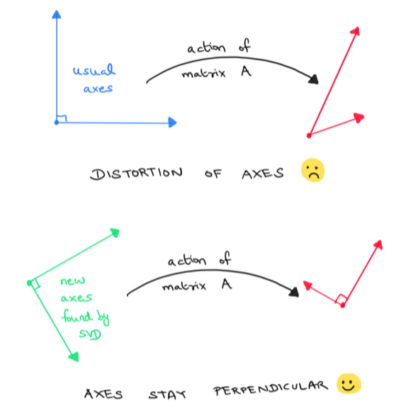
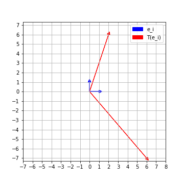
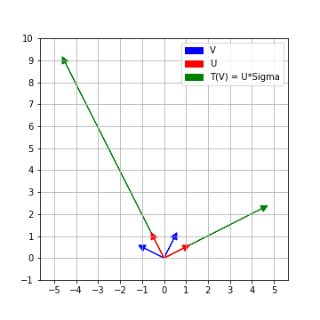

SVD - A geometric view point

Prerequisites
We’ll assume you are familiar with (i.e. know the basic ideas and definitions of) the following topics: matrices as linear maps, rank of a matrix, eigen-values and eigen-vectors, orthogonality
SVD in textbooks
Singular value decomposition a.k.a SVD of a real matrix is often taught at the tail end of a first course in Linear algebra. Prosaically speaking, singular value decomposition of a real matrix is nothing but taking the matrix and expressing it as a product of three nicer matrices.
To be more precise but still prosaic, the actual result is as follows:
If that .. looks a bit tame, let’s try and understand the power and utility of this result with the aid of an example.
Information encoded by a matrix
Here’s \(A\), a very down to earth \(2 \times 2\) matrix
\[ A = \left( \begin{array}{cc} 6 & 2 \\ -7 & 6 \end{array} \right) \]
It is actually representing a linear map \(T: \mathbb{R}^2 \to \mathbb{R}^2\) with respect to the standard basis \(e_1 = (1,0)\) and \(e_2 = (0,1)\). The linear map \(T\) sends the usual basis elements \(e_1\rightsquigarrow (6,-7)\) and \(e_2\rightsquigarrow (2,6)\). Now, not only do we know how \(T\) acts on \(e_1\) and \(e_2\), we actually know how it acts on any \((a,b)\). For instance
\[ \begin{align*} T(2,3) &= T(2,0) + T(0,3) = T(2e_1) + T(3e_2) \\ &= 2T(e_1) + 3T(e_2) = 2(6,-7) + 3(2,6) \\ & = (18,4) \end{align*} \]
Let’s visualize how our linear transformation \(T\) acts on the standard coordinate axes. We can see that the perpendicular axes \(e_1, e_2\) get distorted by \(T\). The images \(\{T(e_1), T(e_2)\}\) are no longer perpendicular.

Finding perpendicular axes that stay perpendicular
Because it is always easier to work with perpendicular axes, we would like to find perpendicular axes of our domain (or rather unit vectors along these axes) which remain perpendicular even after applying \(T\). Clearly \(\{e_1, e_2\}\) was not a good choice. Is there a good choice ? If so, how can we find it ?
A basis of a vector space consisting of unit vectors which are pairwise perpendicular to each other is called an orthonormal basis of the vector space. Thus our question in the more general context can be phrased as follows :
Enter SVD!
The singular value decomposition of \(A\) precisely answers the above question!
\[A = U \Sigma V^T\]

Recall \(V\) in the SVD of \(A\) is an \(m \times m\) orthogonal matrix. Thus, the columns of \(V\) form an orthonormal basis \(\{v_1, v_2, \ldots, v_m\}\) of \(\mathbb{R}^m\). Similarly \(U\) is an orthogonal \(n \times n\) matrix, so the columns of \(U\) form an orthonormal basis \(\{u_1, u_2, \ldots u_n\}\) of \(\mathbb{R}^n\).
But how are \(U\) and \(V\) related ? Right-multiplying the equation \(A = U\Sigma V^T\) by \(V\), gives
\[AV = U\Sigma(V^TV) = U\Sigma\]
So the columns of \(U\Sigma\) are precisely \(\{T(v_1), T(v_2), \ldots T(v_m)\} \subset \mathbb{R}^n\).
Further since \(\Sigma\) is an \(n\times m\) matrix with non-zero entries only along the diagonal entries (\(\Sigma_{i,i}\)) if at all, the columns of \(U\Sigma\) are just the first \(m\) columns of \(U\) scaled by the respective diagonal entries of \(\Sigma\)
\[U\Sigma = \left( \begin{array}{cccc} . & . & \ldots & . \\ . & . & \ldots & . \\ \Sigma_{1,1}u_1 & \Sigma_{2,2}u_2 & \ldots & \Sigma_{m,m}u_m \\ . & . & \ldots & . \\ . & . & \ldots & . \\ \end{array}\right)\]
Thus \(T(v_i) = \Sigma_{i,i} u_i\) and they are mutually perpendicular to each other. Since \(u_i\) are unit vectors, the length of \(T(v_i)\) is precisely the diagonal entry \(\Sigma_{i,i}\)
Summary
Given a linear map \(T : \mathbb{R}^m \to \mathbb{R}^n\) (which is represented by an \(n\times m\) matrix A with respect to standard basis), let \(A = U\Sigma V^T\) be the singular value decomposition of \(A\). Then the columns of \(V\) form an orthonormal basis of \(\mathbb{R}^m\). Further \(\{T(v_i)\}\) still remain perpendicular to each other in \(\mathbb{R}^n\).
The length of the vectors \(\{T(v_i)\}\) are encoded by the diagonal entries of \(\Sigma\). The unit vectors along \(\{T(v_i)\}\) can be completed to an orthonormal basis of \(\mathbb{R}^n\), which are precisely given by the columns of \(U\).
So, you see the SVD of a matrix gives us a LOT of very useful information!
Uniqueness of the SVD ?
Since the non-zero diagonal entries of \(\Sigma\) are precisely the singular values of \(A\) in descending order, \(\Sigma\) is unique for a given matrix \(A\). However, the columns of \(V\) (and hence \(U\)) are not unique.
For a start, the columns of \(V\) can vary up to sign (and since \(T(v_i)\) is just \(u_i\) scaled by a constant, \(u_i\)’s sign will change too). To see why \(U,V\) need not be unique and not just up to sign, think about what the singular value decomposition is for a rotation matrix4.
SVD computation code
Of course, one can (and should know how to) compute the SVD by hand. But that’s a post for another day. For now, we’ll use the existing SVD implementation in numpy linalg package.
import numpy as np
A = np.array([[6,2], [-7,6]])
U,s,VT = np.linalg.svd(A)
print(U)
print(s)
print(VT)The above code gives
>>> U
array([[-0.4472136 , 0.89442719],
[ 0.89442719, 0.4472136 ]])
>>> s
array([10., 5.])
>>> VT
array([[-0.89442719, 0.4472136 ],
[ 0.4472136 , 0.89442719]])Wrapping up the example
\[ \left( \begin{array}{cc} 6 & 2 \\ -7 & 6 \end{array} \right) \approx \left( \begin{array}{cc} -0.45 & 0.89 \\ 0.89 & 0.45 \\ \end{array} \right) \left( \begin{array}{cc} 10 & 0 \\ 0 & 5 \\ \end{array} \right) \left( \begin{array}{cc} -0.89 & 0.45 \\ 0.45 & 0.89 \\ \end{array}\right) \]
You can check that \(100,25\) are the eigen-values of \(A^TA\) and hence \(10,5\) are the singular values of \(A\).
If you actually work out the SVD by hand, you’ll see that this corresponds to
\[ \left( \begin{array}{cc} 6 & 2 \\ -7 & 6 \end{array} \right)= \left( \begin{array}{cc} \frac{-1}{\sqrt{5}} & \frac{2}{\sqrt{5}} \\ \frac{2}{\sqrt{5}} & \frac{1}{\sqrt{5}} \\ \end{array} \right) \left( \begin{array}{cc} 10 & 0 \\ 0 & 5 \\ \end{array} \right) \left( \begin{array}{cc} \frac{-2}{\sqrt{5}} & \frac{1}{\sqrt{5}} \\ \frac{1}{\sqrt{5}} & \frac{2}{\sqrt{5}} \\ \end{array}\right) \]
Footnotes
A square matrix \(X\) is orthogonal iff \(X^TX = XX^T\) is the identity matrix.↩︎
The singular values of an \(n\times m\) matrix A are the square roots of the eigenvalues of \(A^TA\) listed with their algebraic multiplicities.↩︎
By definition, the zero vector, \(\overline{0}\), is perpendicular to every vector↩︎
Since rotation preserves angles, any set of perpendicular vectors remain perpendicular (and unstretched) after the action of the matrix!↩︎
Citation
@online{bhaskhar2020,
author = {Bhaskhar, Nivedita},
title = {SVD - {A} Geometric View Point},
date = {2020-07-27},
url = {https://nivbhaskhar.github.io/blog/posts/2020-07-27-SVD.html},
langid = {en}
}